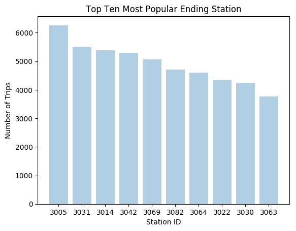

L.A. Bike Share Data
A web app that analyzes and visualizes bike share data from the city of Los Angeles
The number of regular bike share riders is 90821...
The graph shows the top 10 popular bike share starting stations in LA, and the most popular starting station is station 3069...

The graph shows the top 10 popular bike share ending stations in LA, and the most popular starting station is station 3005...
The average distance traveled for all bike share users is 1.51 miles...
The bar graph shows the relationship between trip route (one-way/round trip) and pass type...